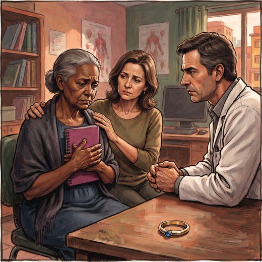

Consulta rápida à beira do leito
Condutas, doses e interações.
Referências da aula · 7
- Livingston G, Huntley J, Liu KY, Costafreda SG, Selbæk G, Alladi S, et al. Dementia prevention, intervention, and care: 2024 report of the Lancet standing Commission. Lancet. 2024;404(10452):572-628. PMID 39096926. doi:10.1016/S0140-6736(24)01296-0.PubMedDOI
- Singh-Manoux A, Dugravot A, Fournier A, Abell J, Ebmeier K, Kivimäki M, et al. Trajectories of depressive symptoms before diagnosis of dementia: a 28-year follow-up study. JAMA Psychiatry. 2017;74(7):712-8. PMID 28514478. doi:10.1001/jamapsychiatry.2017.0660.PubMedDOI
- Olin JT, Katz IR, Meyers BS, Schneider LS, Lebowitz BD. Provisional diagnostic criteria for depression of Alzheimer disease: rationale and background. Am J Geriatr Psychiatry. 2002;10(2):129-41. PMID 11925274.PubMed
- Alexopoulos GS, Abrams RC, Young RC, Shamoian CA. Cornell scale for depression in dementia. Biol Psychiatry. 1988;23(3):271-84. PMID 3337862. doi:10.1016/0006-3223(88)90038-8.PubMedDOI
- Serrano-Pozo A, Escott-Price V, Grinberg LT, Pascoal T, Suárez-Calvet M, Dubois B, et al. Alzheimer's disease. Lancet. 2026;407:2241-62. PMID 42208565. doi:10.1016/S0140-6736(26)00198-4.PubMedDOI
- Lam RW, Kennedy SH, Adams C, Bahji A, Beaulieu S, Bhat V, et al. Canadian Network for Mood and Anxiety Treatments (CANMAT) 2023 update on clinical guidelines for management of major depressive disorder in adults. Can J Psychiatry. 2024;69(9):641-87. PMID 38711351. doi:10.1177/07067437241245384.PubMedDOI
- Freitas EV, Py L, organizadores. Tratado de Geriatria e Gerontologia. 5ª ed. Rio de Janeiro: Guanabara Koogan; 2022.
Documentos oficiais
Leis e publicações do Ministério da Saúde sobre o cuidado da pessoa idosa, de acesso livre.
Abrir os documentos